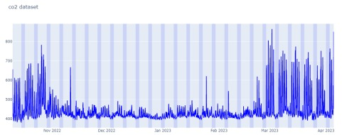

Welcome to IAQ(Indoor Air-Quality) Analysis portfolio, showcasing experience in Machine/Deep learning and
Data analysis with Python packages
This project is based on the thesis course work from UQ
In this project, we address the critical issue of indoor air quality, particularly focusing on the concentration of CO2, and its significant impact on human health and well-being. Leveraging the University of Queensland's CO2 Dataset, we introduce a novel approach to anomaly detection using the Long Short-Term Memory Autoencoder (LSTM-AE) model. Our research aims to improve upon traditional anomaly detection techniques by effectively capturing temporal dependencies in time-series data, ultimately facilitating timely interventions to ensure a healthier indoor environment.
This project aims to design, implement, and evaluate a Long Short-Term Memory Autoencoder (LSTM-AE) model for predicting CO2 levels in air-quality monitoring data. Specific goals include developing tailored LSTM-AE architectures, tuning hyperparameters, rigorously evaluating performance, and conducting comparative analyses with state-of-the-art approaches. Through these objectives, the project seeks to contribute insights into the effectiveness of the LSTM-AE model for real-world air-quality prediction applications.

The dataset comprises air quality monitoring readings from instruments strategically placed across the UQ ITEE building, with key locations at GP South and Axon. Appendix A provides detailed information for readers interested in dataset specifics.
1. Temporal Coverage and Features:
Spanning from '2022-01-10 04:11:58' to '2023-04-05 05:27:03', the dataset records readings every 30 seconds. It includes various air quality indicators such as PM1, PM10, PM2.5, VOC, humidity, pressure, dewpoint, CO2, and temperature.
2. Focus on Carbon Dioxide Analysis:
Due to its significance and ample data availability (4,273,138 readings), Carbon Dioxide (CO2) was selected for focused anomaly detection using the LSTM-AE model.
3. Data Volume Challenges and Selection Criteria:
While the extensive CO2 data provided valuable insights, computational constraints necessitated the selection of a subset for analysis. Data from the 'gs116_794B44' device, totaling 507,570 CO2 readings, was chosen for its comprehensiveness and computational efficiency, representing CO2 levels within the UQ ITEE environment.
Click the icon below to see futhur procedures: